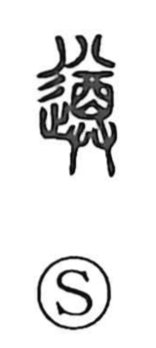

順

Uncategorized
Kun: shitagau | On: jun
to follow ・ to obey
Explanation
Shirakawa treats this as a phono-semantic character whose original form was written 遵, with 尊 serving as the phonetic. The Shuowen already explains it in terms of 循, “to follow,” and the two related graphs illuminate how the meaning arose. 循 depicts moving in a circuit with a raised shield, evoking a military tour used to pacify territory (as in 循撫). 遵 shows proceeding in a circuit while holding up a wine vessel, a ritual procession of offering that compels observance. From these complementary images—military and ritual—emerges the sense of being led or made to accompany, and thus the core meaning “to follow, to obey,” preserved in 順.